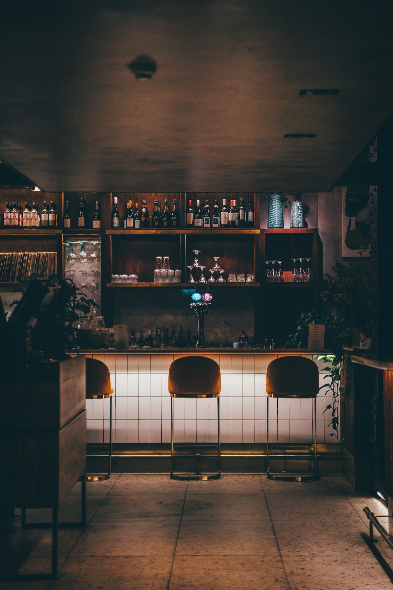

六角橋の、
大人の止まり木。A grown-up perch
in Rokkakubashi.
50代の熟練バーテンダーがお迎えする、落ち着いた大人のための、堅すぎないオールドスタイルバー。六角橋交差点のすぐそば、ビルの2階です。An old-style bar that isn’t stiff — a quiet place for grown-ups, run by a bartender with decades behind the counter. Upstairs, right by the Rokkakubashi crossing.

PLAY OF COLOR
オパールの色で、おまかせを。Order by the colors of an opal.
カクテルの名前を知らなくても大丈夫。今夜の気分に近い「色」を選ぶと、バーテンダーに伝えられるひとことができます。No need to know cocktail names. Pick the color closest to your mood and you’ll get a line to hand to the bartender.
今夜の色TONIGHT’S COLOR
強さSTRENGTH
※ 画面をそのままカウンターでお見せください。Just show this screen at the counter.
THE BAR
バー オパールのことAbout Bar Opal
ふんわりオーダーで大丈夫Vague orders welcome「さっぱりしたもの」くらいの注文でも、おまかせで一杯に仕上げます。Even “something refreshing” is enough — the bartender takes it from there.
バーがはじめての方もNew to bars?話しやすいお二人がカウンターに。お酒にこだわる方にも、はじめての方にも。Two easy-going hosts behind the counter — for regulars and first-timers alike.
オールドスタイルOld style, not stiff落ち着いた大人の空間。でも、かしこまらずにどうぞ。A calm room for grown-ups — no dress code, no pressure.
FROM HAKURAKU STATION
白楽駅からの道順Walking from Hakuraku Station
- STEP 1白楽駅を出るLeave Hakuraku Sta.東急東横線・白楽駅から六角橋商店街へ。Tokyu Toyoko Line — head into the Rokkakubashi shopping street.
- STEP 2商店街を抜けるWalk through the arcade商店街をまっすぐ抜けると、大きな交差点に出ます。Go straight through to the big intersection.
- STEP 3交差点を渡ってすぐCross — you’re there六角橋交差点を渡った先、クレインビルの2階です。Just across the Rokkakubashi crossing, 2F of the Crane Building.
ACCESS
横浜市神奈川区・六角橋Rokkakubashi, Yokohama
- 住所Address
- 〒221-0802 横浜市神奈川区六角橋2-14-2 クレインビル2FCrane Bldg 2F, 2-14-2 Rokkakubashi, Kanagawa-ku, Yokohama
- TEL
- 045-594-7597
- @baropal2019
- 営業時間Hours
Googleマップ ★4.7Google Maps ★4.7